00
| Precautions for Electrical Circuit Service |
•When replacing a fuse, use a fuse of the specified capacity. Use of a fuse with a larger capacity will cause damage to electrical parts and a fire.
 •Before disconnecting or connecting connectors, do either of the following depending on the type of power supply. Otherwise, the electrical parts to which the power is supplied may be damaged.
•Before disconnecting or connecting connectors, do either of the following depending on the type of power supply. Otherwise, the electrical parts to which the power is supplied may be damaged.
•When connecting male and female connectors, also hold connectors and put them together until they lock securely (a click is heard).
•When installing a wiring harness, secure it with clamps so that no slack is left.
•When installing vehicle parts, check that they do not interfere with any wiring harness and they do not catch any wiring harness under them.
•Protect the part of harness which may touch any edge by wrapping it with tape or the like.
•Be careful not to touch the electrical terminals of parts which use microcomputers (e.g. electronic control unit such as ECM, PCM, P/S control module, etc.). The static electricity from your body can damage these parts.
•Never connect any tester (voltmeter, ohmmeter or whatever) to terminals of an electronic control unit when its connector is disconnected. Doing so may cause damage to the electronic control unit.
•Never connect an ohmmeter to an electronic control unit with its connector connected to it. Doing so may cause damage to electronic control unit and sensors.
•Use only the specified voltmeter / ohmmeter. Otherwise, accurate measurements may not be obtained or personal injury may result. Where no voltmeter type is specified, use a voltmeter with high impedance (M Ω/V minimum) or a digital type voltmeter.
•When taking measurements at electrical connectors using a tester probe, insert the probe (2) from the wire harness side (backside) of the connector (1).
•When it is impossible to insert a tester probe from the harness side of connector, insert a properly sized male terminal with a lead into the connector and connect the tester probe to the lead as shown. Do not insert the probe directly into the connector, or the female terminal may be deformed.
•When checking connection of terminals, check male terminals for bend, female terminals for excessive opening, and both for locking (looseness), corrosion, dust, etc.
•Before measuring voltage at each terminal, check that battery voltage is 12 V or more. Terminal voltage check at low battery voltage will lead to erroneous results.
•For the details of the names and installation positions of relays and circuit fuses described in this manual, refer to:
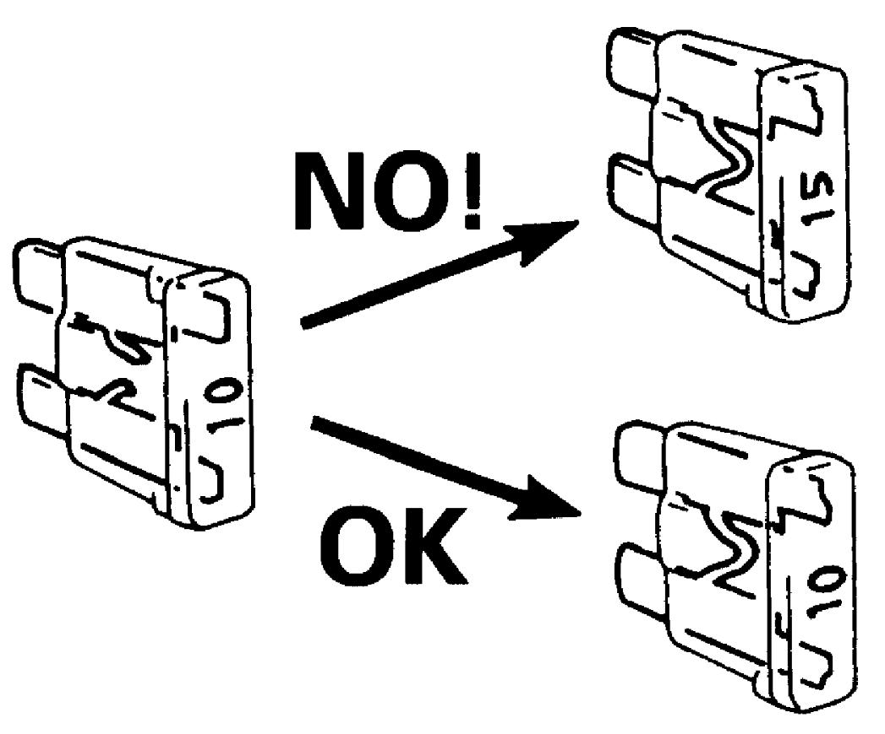
 "Expand image")
—Continuous power supply: Disconnect the negative (–) cable at the battery.
—Ignition power supply: Set ignition “OFF”.
•When disconnecting connectors, never pull on the wiring harness. Unlock the connector lock first and then pull the male and female connectors apart by holding them.—Ignition power supply: Set ignition “OFF”.
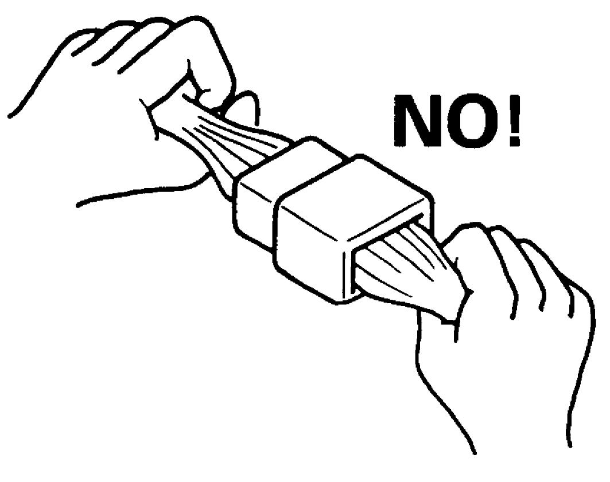
 "Expand image")
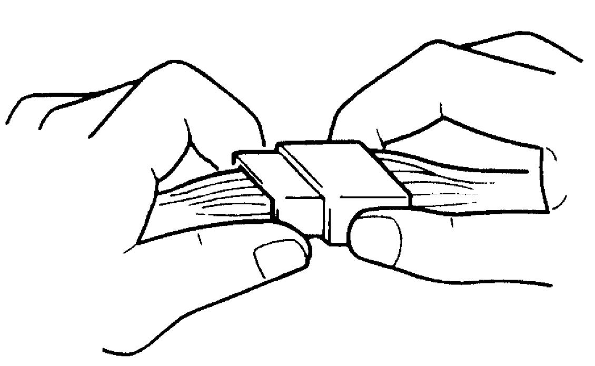
 "Expand image")
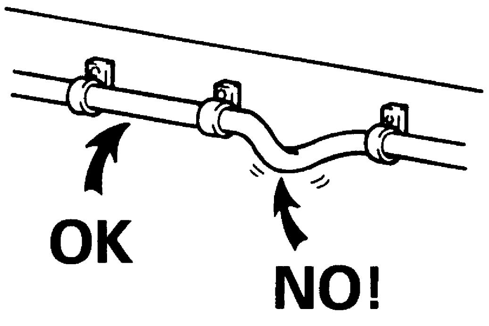
 "Expand image")
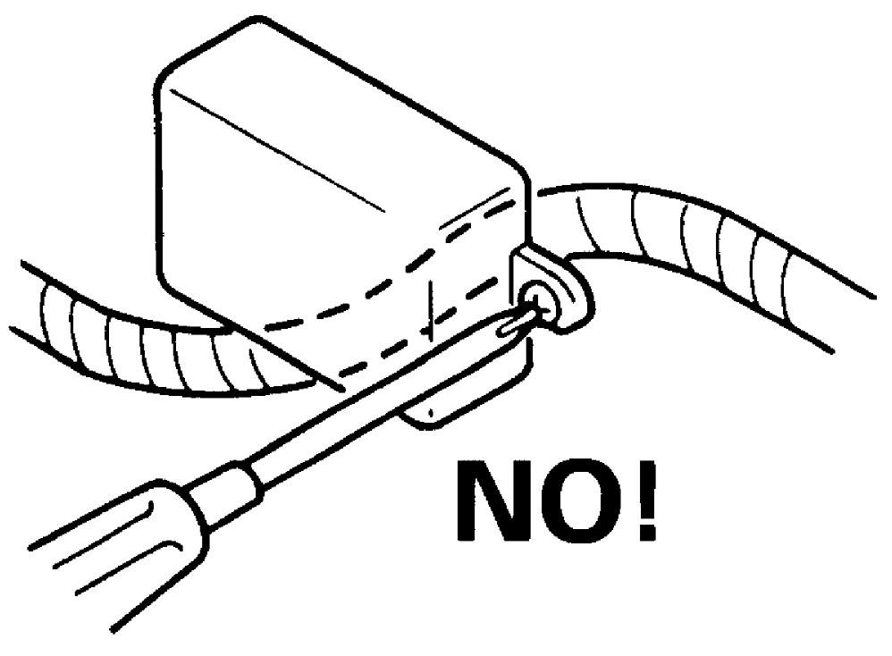
 "Expand image")
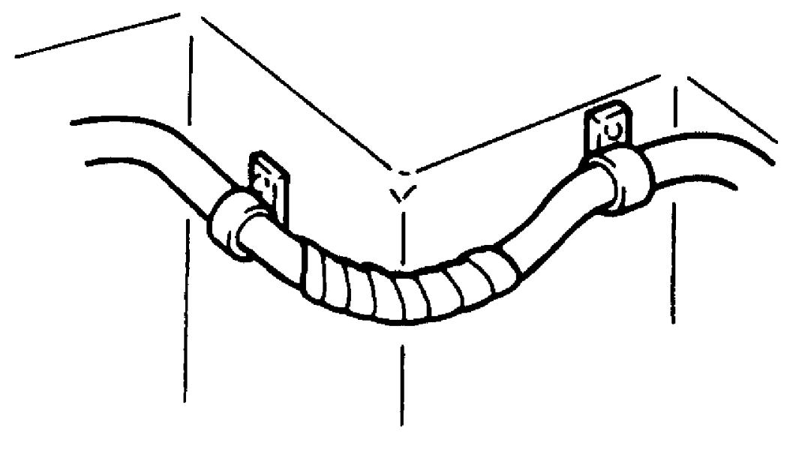
 "Expand image")
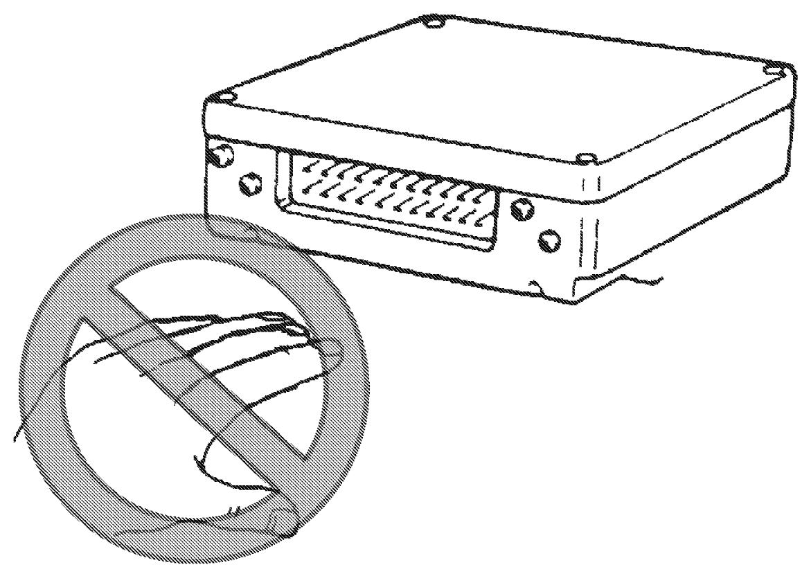
 "Expand image")
•Never connect an ohmmeter to an electronic control unit with its connector connected to it. Doing so may cause damage to electronic control unit and sensors.
•Use only the specified voltmeter / ohmmeter. Otherwise, accurate measurements may not be obtained or personal injury may result. Where no voltmeter type is specified, use a voltmeter with high impedance (M Ω/V minimum) or a digital type voltmeter.
•When taking measurements at electrical connectors using a tester probe, insert the probe (2) from the wire harness side (backside) of the connector (1).
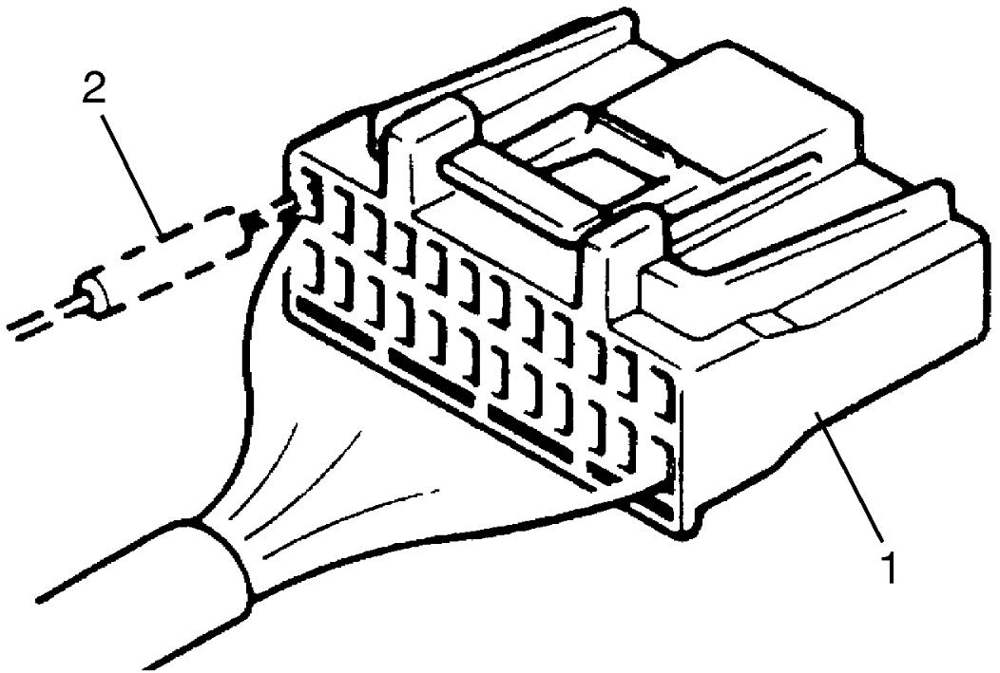
 "Expand image")
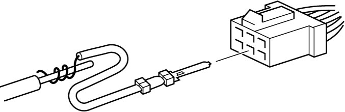
 "Expand image")
•Before measuring voltage at each terminal, check that battery voltage is 12 V or more. Terminal voltage check at low battery voltage will lead to erroneous results.
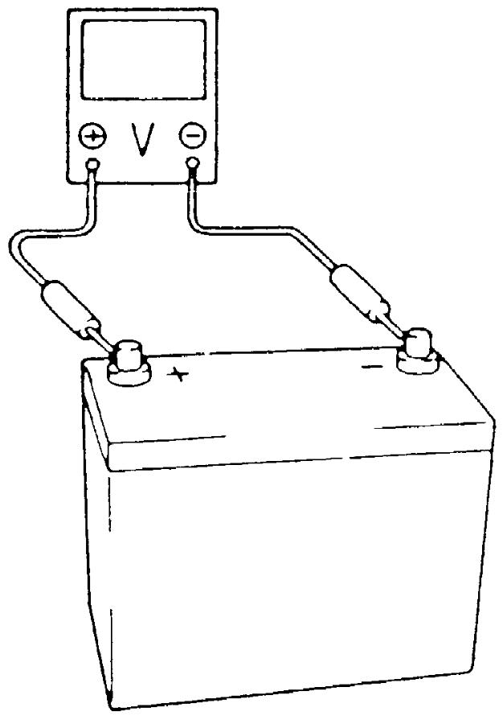
 "Expand image")
Wire Color
•On some connectors, some different circuits use the same wire color.
In this case, the circuit cannot be identified by wire color.
Check the terminal number in the wring diagram to identify the circuit.
•Some wire harnesses in the same circuit may have different colors [a] and [b] at both ends of the intermediate connector.
In this case, the circuit cannot be identified by wire color.
Check the terminal number in the wring diagram to identify the circuit.
In this case, the circuit cannot be identified by wire color.
Check the terminal number in the wring diagram to identify the circuit.
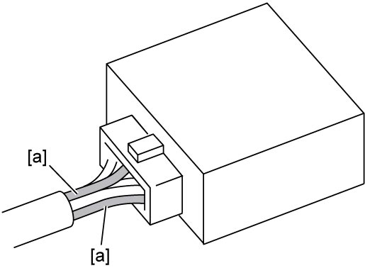
 "Expand image")
| [a]: | Identical wire colors. |
In this case, the circuit cannot be identified by wire color.
Check the terminal number in the wring diagram to identify the circuit.
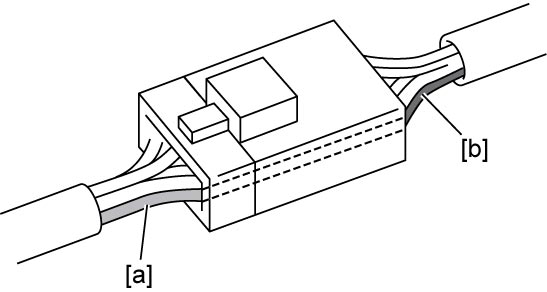
 "Expand image")
Terminal Number
With some connectors, the numbers are molded into the connector. However, the numbers may not mean the terminal numbers which represent the terminal position described in this manual.
Do not refer to the numbers on the connector for the terminal numbers.
Twist Pair Wire Harness
NOTE:
For locations where twist pair wire harness are used, refer to System Circuit Diagram.
•A twist (1) in the twist pair wire harnesses except around the connectors (2) should be within 100 mm (3.9 in.). Excessively-loose lines can be affected by electric noise.
•Do not connect twist pair line terminals using a bypass wire (1). Doing so makes the twist pair line receive electric noise interference.
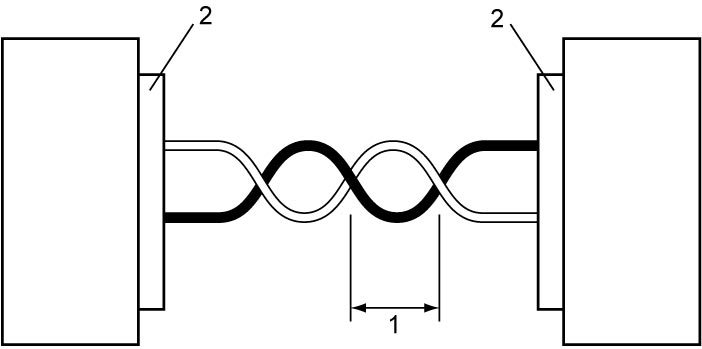
 "Expand image")
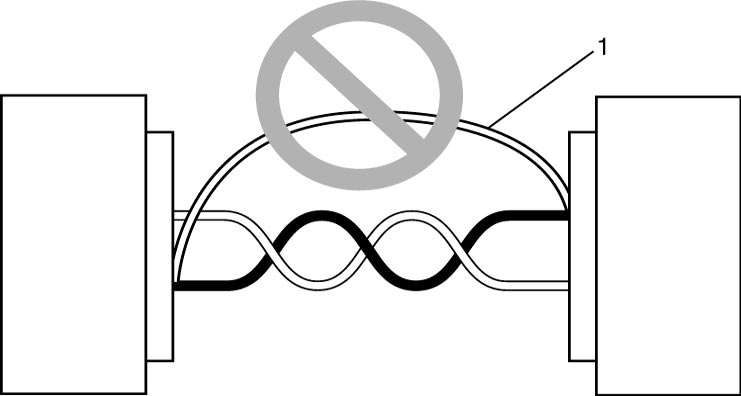
 "Expand image")